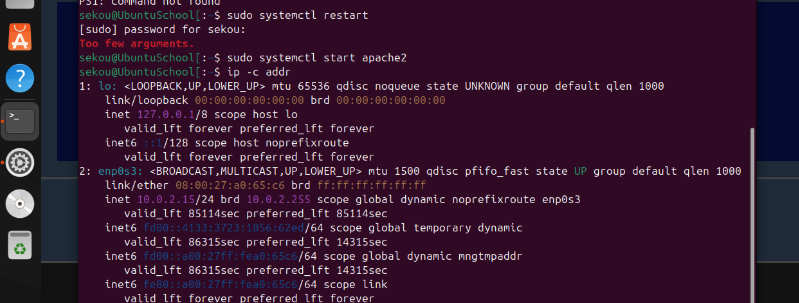
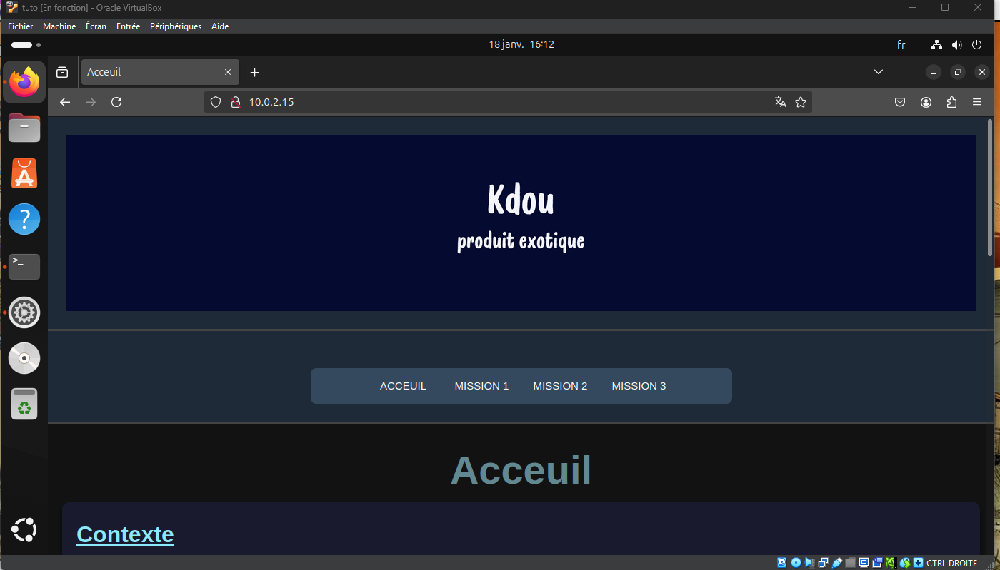
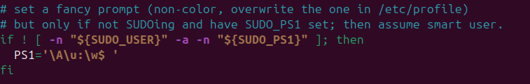
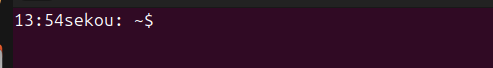

Commandes & Configuration Apache
Pour configurer un serveur web avec Apache, voici quelques commandes utilisées :
apt-get install apache2: Installation du serveur Apache.sudo systemctl start apache2: Démarrage du service Apache.sudo systemctl enable apache2: Activation automatique au démarrage.nano /etc/apache2/apache2.conf: Édition du fichier de configuration principal.
Personnalisation de la ligne de commande :
nano /etc/bash.bashrc: Modification pour inclure des informations personnalisées dans l'invite de commande.- Ajout de la ligne
PS1='\t \u@\h:\w$ 'pour afficher l'heure, l'utilisateur et le chemin actuel.

Configuration du terminal Apache

Site déployé avec Apache

Ligne modifier pour personaliser

application commande

Configuration webstorm